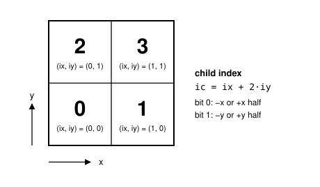
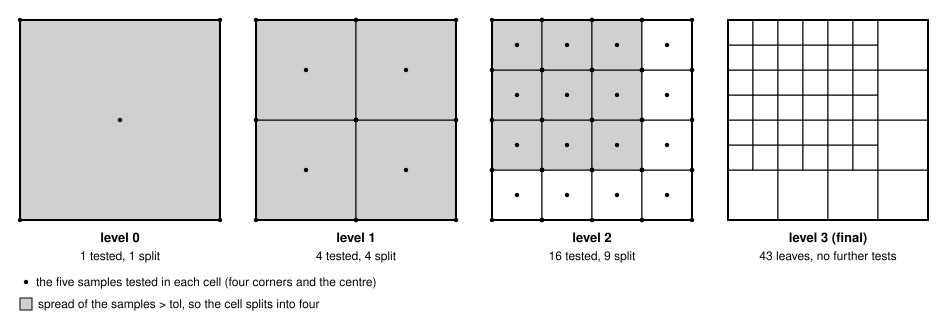
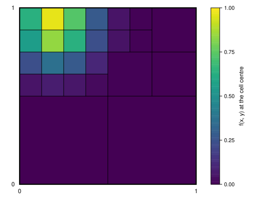
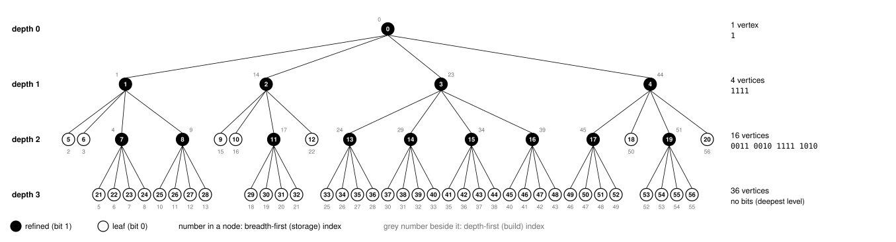
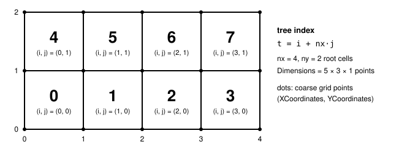
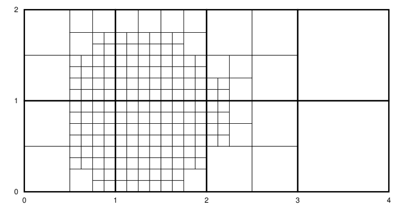
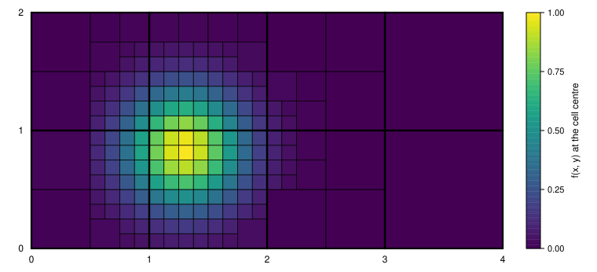

Overview
This tutorial builds an adaptive quadtree in plain modern Fortran, depth first, and then shows how the same tree is laid out breadth first, the way vtkHyperTreeGrid stores it. It starts with one tree, grows to a forest of trees over a coarse grid of root cells, and ends with the exact arrays a vtkHyperTreeGrid writer needs: Descriptors, NumberOfVerticesPerDepth, TreeIds, DepthPerTree and the cell data.
The code is self-contained: two small modules and three short
programs, about 560 lines of Fortran in all, plus a small figure script,
standard Fortran 2008 (it compiles cleanly with
-std=f2018 -Wall under gfortran 13.3). It has no dependency
on VTK or HDF5; the point is the data layout, not the file I/O.
| File | What it holds |
|---|---|
quadtree_mod.f90 |
The tree type, depth-first refinement, the breadth-first conversion and checks |
field_mod.f90 |
The function being mapped, a smooth Gaussian bump |
single_tree.f90 |
Parts 1 and 2: one tree on the unit square |
forest.f90 |
Part 3: a 4 x 2 forest and its global arrays |
export_cells.f90 |
Writes every cell of both examples to text, for the figures |
make_figures.py |
Draws the SVG figures (Python standard library only) |
viridis256.txt |
The viridis colour table (CC0) used for the coloured figures |
TUTORIAL.md |
This tutorial, as Markdown |
make_site.py, site/ |
Build the styled GitHub Pages version of this tutorial into
docs/ (needs pandoc) |
Makefile |
make run builds and runs the programs;
make figures redraws the figures; make site
rebuilds docs/ |
The function is cherry-picked on purpose. It is a single Gaussian bump whose width is comparable to the root cell size, so the simple five-point refinement test used here always sees it. Real functions with features narrower than a cell can slip between the samples and never trigger refinement; this example does nothing about that, and the method is not robust for real-world function mapping (see the last section).
Part 1: one quadtree, built depth first
A depth-first tree is the natural thing to write in Fortran: a derived type whose children are an allocatable array of the same type. Recursive allocatable components are Fortran 2008, so no pointers and no manual deallocation are needed; the whole tree is freed when the root goes out of scope.
integer, parameter :: MAX_LEVEL = 3 ! the root is level 0
integer, parameter :: NCHILD = 4
type :: qnode
integer :: level = 0
real(dp) :: x0 = 0, y0 = 0 ! lower-left corner
real(dp) :: h = 1 ! edge length (square cells)
real(dp) :: value = 0 ! f sampled at the cell centre
type(qnode), allocatable :: child(:) ! child(0:3) when refined
end type qnodeA leaf is simply a node whose child is not allocated, so
allocated(node%child) is the refined flag. Every node,
refined or not, keeps a value; vtkHyperTreeGrid also stores a value for
every cell, not only for leaves.
The function to map is passed in through an abstract interface, so the tree code knows nothing about it:
abstract interface
pure function field2d(x, y) result(f)
import :: dp
real(dp), intent(in) :: x, y
real(dp) :: f
end function field2d
end interfaceThe refinement test samples f at the four corners and the centre of a cell and refines when the spread of those five samples exceeds a tolerance. Refinement stops at level 3, so a terminal leaf is at most 1/8 of the root cell on a side.
logical function needs_refinement(node, f, tol)
type(qnode), intent(in) :: node
procedure(field2d) :: f
real(dp), intent(in) :: tol
real(dp) :: s(5)
associate (x0 => node%x0, y0 => node%y0, h => node%h)
s = [ f(x0, y0), f(x0 + h, y0), f(x0, y0 + h), f(x0 + h, y0 + h), &
f(x0 + 0.5_dp*h, y0 + 0.5_dp*h) ]
end associate
needs_refinement = (maxval(s) - minval(s)) > tol
end function needs_refinementThe build itself is one recursive subroutine. Depth first means a
child’s whole subtree is finished before its next sibling is started.
The children are numbered the way VTK numbers them: child index ic = ix
+ 2*iy, so bit 0 picks the -x or +x half and bit 1 picks the -y or +y
half (x is the fastest bit). That is the rule for a grid in the xy
plane, as here. In any plane, bit 0 follows the lower of the grid’s two
in-plane axes (x before y before z) and bit 1 the higher: in an xz-plane
grid bit 0 picks the x half and bit 1 the z half. This holds even though
vtkHyperTreeGrid::GetAxes lists the axes of an xz-plane
grid as z then x; that order does not affect child numbering.

recursive subroutine refine(node, f, tol)
type(qnode), intent(inout) :: node
procedure(field2d) :: f
real(dp), intent(in) :: tol
integer :: ic, ix, iy
node%value = f(node%x0 + 0.5_dp*node%h, node%y0 + 0.5_dp*node%h)
if (node%level >= MAX_LEVEL) return
if (.not. needs_refinement(node, f, tol)) return
allocate (node%child(0:NCHILD - 1))
do ic = 0, NCHILD - 1
ix = mod(ic, 2) ! bit 0: -x (0) or +x (1)
iy = ic / 2 ! bit 1: -y (0) or +y (1)
associate (c => node%child(ic))
c%level = node%level + 1
c%h = 0.5_dp*node%h
c%x0 = node%x0 + ix*c%h
c%y0 = node%y0 + iy*c%h
call refine(c, f, tol)
end associate
end do
end subroutine refineThe function for the single tree is a Gaussian bump on the unit square, centred at (0.20, 0.90) with sigma = 0.15, mapped with tol = 0.10:
pure function bump_unit(x, y) result(f)
real(dp), intent(in) :: x, y
real(dp) :: f
real(dp), parameter :: xc = 0.20_dp, yc = 0.90_dp, sigma = 0.15_dp
f = exp(-((x - xc)**2 + (y - yc)**2) / (2*sigma**2))
end function bump_unitPrinting the tree in the order it was built shows the depth-first
structure. Each label is the path of child indices from the root, so
20 is child 0 of child 2; + marks a refined
node. These are the first lines of the program’s output:
+ root level 0 f(centre) = 0.00387 refined
- 0 level 1 f(centre) = 0.00008
- 1 level 1 f(centre) = 0.00000
+ 2 level 1 f(centre) = 0.57375 refined
+ 20 level 2 f(centre) = 0.16438 refined
- 200 level 3 f(centre) = 0.05227
- 201 level 3 f(centre) = 0.07928
- 202 level 3 f(centre) = 0.24084
- 203 level 3 f(centre) = 0.36533
+ 21 level 2 f(centre) = 0.09432 refined
- 210 level 3 f(centre) = 0.06005
...The figure shows where the refinement went, level by level. Dots are the five samples tested in each cell, and grey cells are the ones whose samples spread by more than tol, so they split. The code builds depth first rather than level by level, but it ends with the same mesh.

The tree has 33 cells: 1 at level 0, 4 at level 1, 8 at level 2 and 20 at level 3. Its 25 leaves mix all three refinement levels: 20 at level 3 over the bump in the upper left, 3 at level 2 around them, and 2 at level 1 along the bottom, where f is almost flat.
Fully resolved, each leaf coloured by f at its centre through the perceptually uniform viridis colour map, on a scale covering the range of f, 0 to 1:

Part 2: from depth first to breadth first
vtkHyperTreeGrid does not store pointers or a pre-order walk. It stores each tree level by level: all cells at depth 0, then all at depth 1, and so on, with each refined cell’s four children kept together in child order. Three arrays describe one tree completely:
- Descriptor: one bit per cell in breadth-first order, 1 = refined, 0 = leaf. The deepest level is left out, because nothing there can be refined.
- NumberOfVerticesPerDepth: how many cells sit at each depth, refined and leaf alike. VTK names it after the vertices of the tree, but each one is a cell of the mesh.
- Cell values: one value per cell, in the same breadth-first order.
The conversion does not need a queue. Within one depth, a depth-first
walk meets the cells left to right, in exactly the order a breadth-first
walk would. So we walk depth first, as we built the tree, and append
each cell to a list for its own depth; concatenating the lists gives the
breadth-first layout. This is the same approach VTK takes in
vtkHyperTree::ComputeBreadthFirstOrderDescriptor.
type :: depth_bucket
logical, allocatable :: refined(:)
real(dp), allocatable :: value(:)
end type depth_bucket
recursive subroutine collect(node, b)
type(qnode), intent(in) :: node
type(depth_bucket), intent(inout) :: b(0:)
integer :: ic
b(node%level)%value = [b(node%level)%value, node%value]
b(node%level)%refined = [b(node%level)%refined, allocated(node%child)]
if (allocated(node%child)) then
do ic = 0, NCHILD - 1
call collect(node%child(ic), b)
end do
end if
end subroutine collectfunction to_breadth_first(root) result(bf)
type(qnode), intent(in) :: root
type(htree_bf) :: bf
type(depth_bucket) :: b(0:MAX_LEVEL)
integer :: d
do d = 0, MAX_LEVEL
allocate (b(d)%refined(0), b(d)%value(0))
end do
call collect(root, b)
bf%depth = count([(size(b(d)%value) > 0, d = 0, MAX_LEVEL)])
allocate (bf%nverts_per_depth(0), bf%descriptor(0), bf%values(0))
do d = 0, bf%depth - 1
bf%nverts_per_depth = [bf%nverts_per_depth, size(b(d)%value)]
bf%values = [bf%values, b(d)%value]
! The deepest level is never refined, so it is left out.
if (d < bf%depth - 1) bf%descriptor = [bf%descriptor, b(d)%refined]
end do
end function to_breadth_firstThe growing arrays use reallocation on assignment, which is fine at tutorial sizes; a production writer would count first and fill preallocated arrays. For the single tree of Part 1 the program prints:
depth (levels present) : 4
NumberOfVerticesPerDepth : 1 4 8 20
total cells : 33
leaves : 25
descriptor bits : 13 (deepest level omitted)
depth 0: 1
depth 1: 0011
depth 2: 11110010
descriptor bytes (hex) : 9F 90Reading the bits by depth retraces the build. At depth 1,
0011 says children 0 and 1 of the root are leaves and 2 and
3 are refined. The depth-2 bits, in groups of four, give the children of
those two cells in turn: 1111 refines all of 20 to 23, and
0010 refines only 32. Those match the depth-first listing
in Part 1 line for line. The counts check themselves too: two refined
cells at depth 1 give 8 at depth 2, and five refined cells at depth 2
give 20 at depth 3.
The whole tree makes the mapping visible. The grey number beside each node is the order the depth-first build visits it; the number inside is its breadth-first storage index. Reading each row left to right gives that depth’s descriptor bits.

On disk the descriptor is a packed bit array. vtkBitArray puts bit k
in byte k/8 under the mask 0x80 >> (k % 8), so the
first bit is the most significant bit of the first byte. Packed that
way, the 13 bits become the two bytes 9F 90, the last one
padded with zeros.
pure function pack_bits_msb_first(bits) result(bytes)
logical, intent(in) :: bits(:)
integer, allocatable :: bytes(:)
integer :: k
allocate (bytes((size(bits) + 7)/8), source=0)
do k = 0, size(bits) - 1
if (bits(k + 1)) bytes(k/8 + 1) = ior(bytes(k/8 + 1), ishft(128, -mod(k, 8)))
end do
end function pack_bits_msb_firstAs a cross-check, the module also has the textbook conversion, a FIFO
queue of node pointers (to_breadth_first_queue). The
program compares the two and runs a consistency test on the counts; all
three checks print T.
Part 3: a forest of quadtrees
A vtkHyperTreeGrid is a coarse rectilinear grid with one tree rooted in each coarse cell. Nothing about a single tree changes; the forest only adds a coarse grid and a rule for numbering the roots. Here the coarse grid is 4 x 2 unit cells over [0, 4] x [0, 2], and the bump moves to (1.30, 0.85) with sigma = 0.35 so that it straddles several root cells and leaves the right-hand column untouched.
The coarse grid is given by point coordinates, so
Dimensions counts points and the number of root cells per
axis is one less. VTK’s default root indexing (TransposedRootIndexing
off) runs i fastest: tree index t = i + nx*j for a 2D grid.

integer, parameter :: nx = 4, ny = 2 ! root cells per direction
integer, parameter :: ntrees = nx*ny
real(dp) :: xcoords(nx + 1), ycoords(ny + 1)
type(qnode) :: trees(0:ntrees - 1)
type(htree_bf) :: bf(0:ntrees - 1)
xcoords = [(real(i, dp), i = 0, nx)]
ycoords = [(real(j, dp), j = 0, ny)]
do j = 0, ny - 1
do i = 0, nx - 1
t = i + nx*j
trees(t) = make_root(xcoords(i + 1), ycoords(j + 1), xcoords(i + 2) - xcoords(i + 1))
call refine(trees(t), bump_forest, tol)
end do
end doThe leaf cells of the whole forest, drawn below with thick lines for the root cell boundaries, show the refinement crossing tree boundaries smoothly. Root cells are the 1 x 1 squares of the coarse grid, and no leaf crosses a root boundary. Each tree refines on its own, and nothing enforces a 2:1 balance criterion, either within a tree or across root cell boundaries. The end state is unbalanced: a level-1 leaf can sit next to level-3 leaves inside trees 0, 2 and 4, and across the root boundary at x = 2, level-3 leaves in tree 1 touch a level-1 leaf in tree 2. The breadth-first layout below does not depend on balance, but a more fully featured implementation would enforce it (see the caveats).
The leaf cells, then the leaves coloured by f on the same 0 to 1 viridis scale:


Each tree is converted to breadth-first form exactly as in Part 2. Trees 3 and 7 are a single leaf root, so they have depth 1 and no descriptor bits at all.
| Tree | (i, j) | Depth | Vertices per depth | Descriptor, by depth |
|---|---|---|---|---|
| 0 | (0, 0) | 4 | 1 4 8 28 | 1 0101 01111111 |
| 1 | (1, 0) | 4 | 1 4 16 60 | 1 1111 1111101111111111 |
| 2 | (2, 0) | 4 | 1 4 4 8 | 1 0010 1010 |
| 3 | (3, 0) | 1 | 1 | none |
| 4 | (0, 1) | 4 | 1 4 8 20 | 1 0101 11110100 |
| 5 | (1, 1) | 4 | 1 4 16 44 | 1 1111 1111111111001000 |
| 6 | (2, 1) | 4 | 1 4 4 4 | 1 1000 1000 |
| 7 | (3, 1) | 1 | 1 | none |
The grid-wide arrays are the per-tree arrays concatenated in TreeIds
order. The offset of each tree’s first cell in the cell-data array is
the running total of the cells before it; that is the start index VTK’s
implicit global indexing uses
(vtkHyperTree::SetGlobalIndexStart).
allocate (tree_ids(0), depth_per_tree(0), nverts(0), global_start(0), &
descriptors(0), cell_data(0))
do t = 0, ntrees - 1
tree_ids = [tree_ids, t]
depth_per_tree = [depth_per_tree, bf(t)%depth]
nverts = [nverts, bf(t)%nverts_per_depth]
global_start = [global_start, size(cell_data)] ! 0-based offset
descriptors = [descriptors, bf(t)%descriptor]
cell_data = [cell_data, bf(t)%values]
end doDimensions (points) : 5 3 1
XCoordinates : 0.0 1.0 2.0 3.0 4.0
YCoordinates : 0.0 1.0 2.0
BranchFactor : 2
TreeIds : 0 1 2 3 4 5 6 7
DepthPerTree : 4 4 4 1 4 4 4 1
NumberOfVerticesPerDepth : 1 4 8 28 1 4 16 60 1 4 4 8 1 1 4 8 20 1 4 16 44 1 4 4 4 1
Descriptors : 86 bits
10101011111111111111111011111111111001010101010111110100111111111111111001000110001000
packed, MSB first (hex) : AB FF FE FF E5 55 F4 FF FE 46 20
GlobalIndexStart per tree : 0 41 122 139 140 173 238 251
NumberOfCells (cell data) : 252
leaves : 191The sum of DepthPerTree (26) is the length of
NumberOfVerticesPerDepth, which is how a reader splits the concatenated
counts back into trees, and from those counts it knows how many
descriptor bits each tree owns. As a last check, the program reads back
the root value of tree 1 at cell_data(global_start(2) + 1)
(Fortran is 1-based) and gets 0.51517, which equals f at the centre of
root cell (1, 0).
These names match what VTK itself writes. The XML HyperTreeGrid
writer (format version 2) emits a Trees element holding
Descriptors, NumberOfVerticesPerDepth,
TreeIds and DepthPerTree, followed by
CellData in this same per-tree breadth-first order. The
vtkHDF format stores the same information as Descriptors,
DescriptorsSize (in bits), TreeIds,
DepthPerTree and NumberOfCellsPerTreeDepth,
plus the root attributes BranchFactor and
Dimensions. It adds what a file split into pieces needs:
NumberOfTrees, NumberOfCells and
NumberOfDepths, one entry per piece, and the coarse grid’s
XCoordinates, YCoordinates and
ZCoordinates. It also requires each piece’s descriptor bits
to start on a fresh byte.
Running it
Any Fortran 2008 compiler should do; this was built and run with
gfortran 13.3.0 on Linux, with -std=f2018 -Wall and,
separately, with -fcheck=all for bounds checking. Both
builds were clean and gave the same output.
make run # builds single_tree and forest, then runs both
# or by hand:
gfortran -std=f2018 -Wall -c quadtree_mod.f90 field_mod.f90
gfortran -std=f2018 -Wall single_tree.f90 quadtree_mod.o field_mod.o -o single_tree
gfortran -std=f2018 -Wall forest.f90 quadtree_mod.o field_mod.o -o forest
./single_tree
./forestThe full output of both programs is saved next to the sources as
single_tree_output.txt and forest_output.txt.
Besides the listings quoted above, each program prints a character
drawing of its leaf cells, labelled by level; the figures in this
tutorial show the same meshes. The single-tree program ends with its
three checks:
== Checks ==
layout is self-consistent : T
bucket walk == FIFO queue (bits) : T
bucket walk == FIFO queue (values): TThe forest program stops with error stop if any tree
fails the same consistency check, so reaching the global arrays means
all eight trees passed.
The figures come from the same code. export_cells writes
every cell of both examples to cells_single.txt and
cells_forest.txt, and make_figures.py, which
needs only Python’s standard library, draws the SVGs from them.
make figures runs both. make site turns this
tutorial into the styled web page in docs/, ready for
GitHub Pages; it needs pandoc and Python’s standard library.
Caveats and limits
The refinement test is deliberately naive and this example only works because the function was chosen to suit it. Five samples per cell cannot see a feature narrower than the cell. Swap the bump for one with sigma = 0.02 centred at (0.3, 0.3) and all five root samples fall below 1e-40, so the spread is zero, the root is never refined and the peak disappears from the map entirely. Robust function mapping needs more than this: oversampling, gradient or curvature estimates, a priori knowledge of feature scales, or refinement driven by the simulation itself. None of that is attempted here.
Other things this example leaves out on purpose:
- Mask: no cells are blanked. vtkHyperTreeGrid allows an optional bit mask with one bit per cell, in the same breadth-first order as the cell data. Any cell can be masked, not only a leaf; masking a refined cell hides its whole subtree, and VTK’s writers then store that cell as a leaf and drop its descendants. A real writer may need this.
- Balance: nothing enforces a 2:1 balance criterion, within a tree or across root boundaries, and the forest’s end state is unbalanced. A more fully featured implementation would refine any leaf whose face neighbour is more than one level finer, and let that refinement ripple across root boundaries into neighbouring trees, which needs neighbour lookup between trees as well as within them.
- Refined-cell values: a refined cell’s value is f at its centre, not an average of its children. A writer for simulation data would choose its own rule.
- Pieces and I/O: there is one piece and no file is written. vtkHDF also asks each piece’s descriptor and mask bits to start on a new byte.
- Performance: arrays grow by reallocation on assignment, which is quadratic. A production writer would count cells per depth first and fill preallocated arrays.
What was checked, and what was not. The child ordering, the
descriptor rules, the bit packing, the per-depth cell counts, the root
indexing and the XML v2 array names were taken from VTK’s documentation
and source (listed below). The programs check their own arrays for
consistency and compare two independent conversions. The vtkHDF
specification does not spell out the order of the cell data, but VTK’s
own vtkHDF writer settles it: it reorders every cell array through the
breadth-first id map that
ComputeBreadthFirstOrderDescriptor returns, tree by tree,
which is the order used here. The arrays were not loaded into VTK or
ParaView.
Sources
Read on 14 Nov 2026.
- vtkHyperTreeGrid class reference: Dimensions as points, i-fastest cell order.
- vtkHyperTree class reference: child numbering, bit 0 for x and bit 1 for y.
- vtkHDF file format specification: HyperTreeGrid datasets, descriptor and mask rules.
- vtkHyperTree.cxx:
ComputeBreadthFirstOrderDescriptorandBuildFromBreadthFirstOrderDescriptor. - vtkHyperTreeGrid.cxx:
GetIndexFromLevelZeroCoordinates, the root index formula. - vtkBitArray.h:
SetValueand the0x80 >> bitmask. - vtkHDFWriter.cxx: cell arrays and the mask written through the breadth-first id map (read on 15 Nov 2026, at v9.7.2).
- vtkXMLHyperTreeGridWriter.cxx: format version 2 array names and cell-data order.